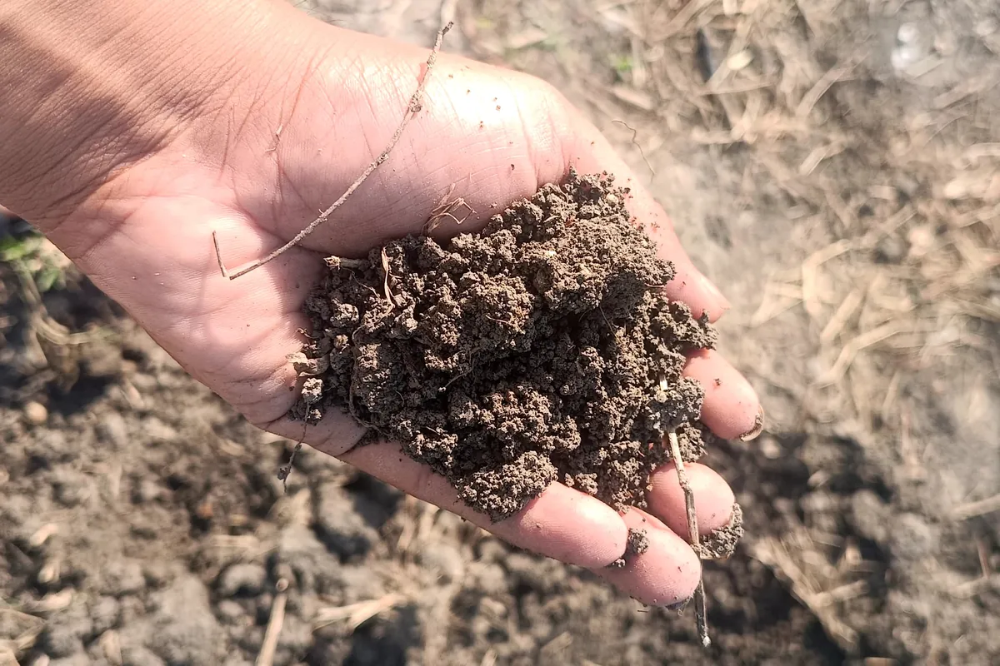
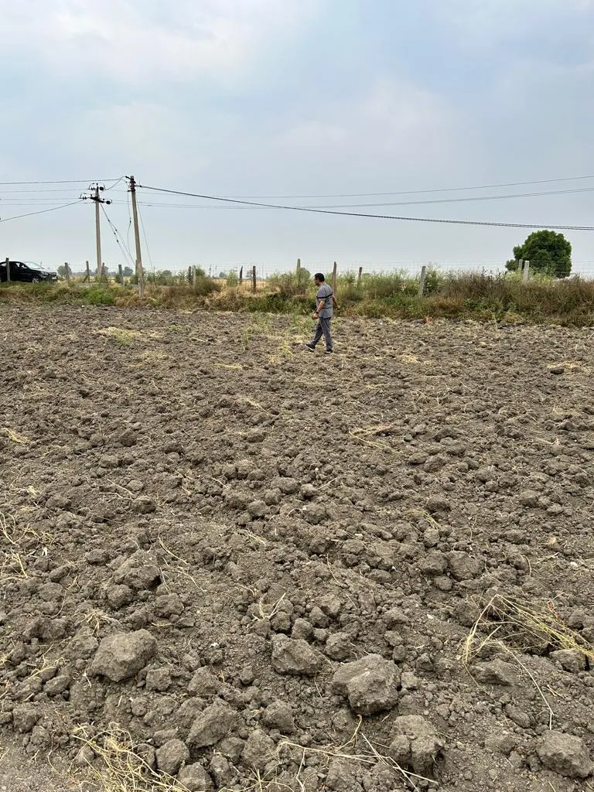
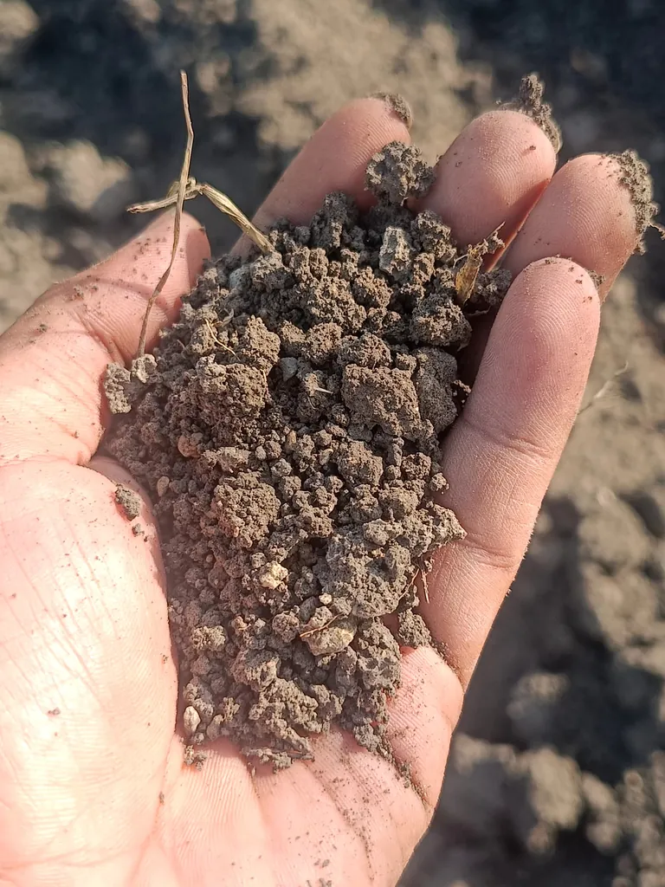
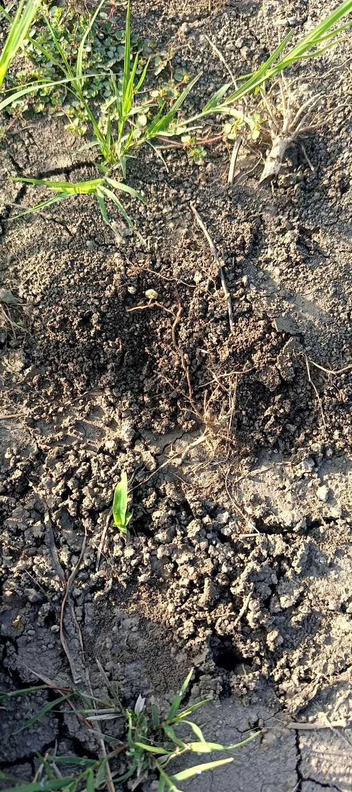
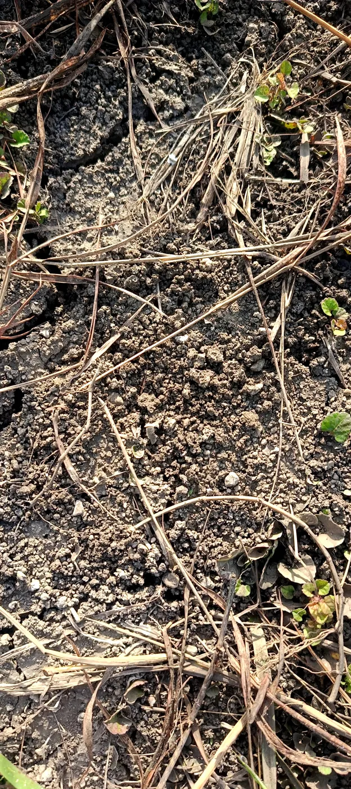

The Phavda Test
A year ago, our farm supervisor could not push a phavda (spade) into this soil without first flooding it with water. The ground was hard as brick. Every bed meant soaking, waiting, then hacking.
Today the phavda goes in by hand. The soil breaks into soft crumbs, and when you turn a clod over you find kechua — earthworms — wriggling in it. We have reached almost no-till farming: we no longer dig the soil, we just open a small hole and plant.

We did not do anything clever. We mostly stopped doing things — and let the soil heal itself.
Before and After
March 2024, the day we first walked the land. It had been a conventional wheat field for years. Freshly ploughed, it broke into hard, fist-sized clods of pale grey clay. Nothing grew on it. No roots, no cover, nothing for soil life to eat.


October 2026, two and a half years later. No plough, no chemicals. The same clay now crumbles into small, dark granules. Roots, runners and old stems lace the top layer.


Same farm, same clay. The main difference between these three patches is how well the soil was kept covered.
Six Simple Things We Did
None of these need machines, money or chemicals. Any farmer can start tomorrow.
How the soil rebuilt itself
- Stop ploughing. Every pass of a plough breaks the soil's structure and kills the fungi and worms that build it. We loosen only the top few centimetres by hand, where we plant. The rest of the soil is left alone.
- Never leave soil bare. Bare clay in a Kota summer bakes, cracks and dies. We keep it covered all year, with straw, fallen leaves, crop residue or a living crop. Covered soil stays cooler and wetter, and soil life keeps working.
- Mulch with whatever the farm gives. Leaves, weeds, prunings and harvest residue all go back on the ground. Nothing is burnt and nothing leaves the farm. As the mulch rots, it becomes food for the soil. (More on our mulching.)
- Feed the soil, not the plant. Farm Yard Manure (FYM), vermicompost and Jeevamrut add the microorganisms and organic matter that hard soil lacks. We feed the life in the soil, and the soil feeds the plants.
- Plant trees and keep roots in the ground. Trees drop leaves that mulch the soil, and their roots break up hard layers deep down. Living plants, even weeds, keep roots in the soil all year, opening channels for air, water and worms.
- Let the kechua do the digging. Earthworms are free ploughs. They pull mulch underground, mix the soil and leave behind casts rich in nutrients. When the worms came back, the phavda stopped needing water.
Leave the Land to Nature
The biggest lesson is that the soil did most of the work itself. Our job was to stop hurting it, cover it, feed it a little, and then step back. Each year we intervene less, and the land does more.
That is where we are heading: a farm that largely runs itself. Trees, roots, worms and microbes do the ploughing and the fertilising. We mostly watch, harvest and learn.
What is not fixed yet. Patches left bare still crack in the heat, and our thin mulch is not thick enough everywhere. The soil is clearly better, but it is a work in progress.
What we will measure next. Photos show the change, but numbers prove it. This October we will dig a 30 cm pit at fixed spots to count earthworms, time how fast water soaks in, and send samples for a soil test (organic carbon and pH). We will share the results here.
If you farm near Kota and want to see this soil for yourself, come visit. Bring a phavda.
← All blog posts